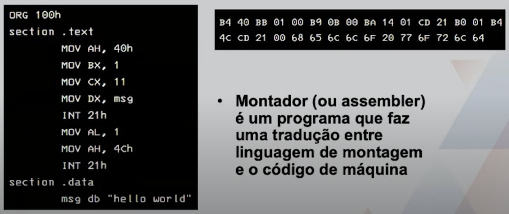

Disciplinas
-
SISTEMAS COMPUTACIONAIS. Concluído
Materiais
Vídeo 1 - Sistemas Computacionais - Linguagens de montagem e de máquina. sendProf° ministrante: Alessandra Alaniz Macedo.
Conteúdo
Linguagens de montagem e de máquina.
CONTEXTUALIZAÇÃO.
- Deve existir uma maneira de um computador entender as instruções dadas para então operá-las
- Linguagem de montagem e linguagem de máquina
LINGUAGEM DE MONTAGEM.
- Linguagem que usa muitos nomes simbólicos (mnemónicos), incluindo a atribuição de nomes em posições específicas da memória principal e das instruções para operar o computador (ex. Assembly)
- Composta também de instruções que não são executadas diretamente, mas que são úteis para o montador produzir o código de máquina
LINGUAGEM DE MÁQUINA.
- Consiste em instruções executadas diretamente pelo processador
- Cada instrução é uma cadeia binária (0 e 1) que contém: um opcode (código de operação básica da instrução), referências a operandos e, possivelmente, bits relacionados à execução
- as instruções, bem como os endereços de memória, devem ser escritas na linguagem de máquina
LINGUAGEM DE MONTAGEM.
- Cada declaração de uma linguagem de montagem produz exatamente uma instrução de máquina
- A linguagem de montagem é mais fácil de programar do que a linguagem de máquina
- A utilização de nomes e endereços simbólicos em vez de binários ou hexadecimais faz uma enorme diferença
- O programador de linguagem de montagem precisa se lembrar apenas dos nomes simbólicos porque o assembler os traduz para instruções de máquina
- O programador de linguagem de máquina deve sempre trabalhar com os valores numéricos dos endereços
LINGUAGEM DE MÁQUINA x DE MONTAGEM.
- Toda arquitetura de computador tem uma ISA (Instruction Set Architecture), que é um conjunto de instruções, registradores e outras características visíveis para programadores de baixo nível
- todas as máquinas têm uma linguagem de montagem ou assembly, uma representação simbólica da arquitetura do conjunto de instruções que utiliza nomes como ADD, SUB e MUL, em vez de números binários
- Um programa de baixo nível de abstração apresenta uma longa lista de números binários ou hexadecimais, um número por instrução para informar as instruções a executar e os operandos
POR QUE USAR A LINGUAGEM DE MONTAGEM?
- Programar na linguagem de montagem demora mais do que em uma linguagem de alto nível, pois:
- Leva mais tempo para depurar, além da manutenção mais complicada devido ao desempenho e acesso à máquina
- É mais fácil que a linguagem de máquina, porém, ainda assim, tem suas dificuldades
EXEMPLO:
"Olá Mundo" escrito para DOS x86 16 bits
USOS DA LINGUAGEM DE MONTAGEM.
- Localizar erros, analisando um código em linguagem de montagem gerado pelo compilador, ou a janela de montagem em um depurador
- Criar compiladores, depuradores e outras ferramentas de desenvolvimento
- Manipular sistemas embarcados, pois têm menos recursos do que PCs e mainframes
- Construir drivers para hardware e códigos de sistemas que precisam acessar hardware, registradores de controle do sistema etc.
- Acessar instruções que não são acessíveis a partir das linguagens de alto nível
- Otimizar o tamanho do código para caber em uma cache
- Otimizar código em desempenho checando a otimização feita pelo compilador
- Compatibilizar bibliotecas de funções com compiladores e sistemas operacionais
LINGUAGEM DE ALTO-NÍVEL OU ASSEMBLY?
- Comumente, a melhor escolha recai sobre uma linguagem de alto nível para abstrair detalhes do computador e aumentar a produtividade dos programadores
- Existem linguagens de programação não disponíveis em todas as plataformas, particularmente as baseadas em microprocessadores menores, em que a diversidade do mercado é maior
- Se a aplicação a ser desenvolvida se destinar a ser portada para vários sistemas diferentes, este aspecto é essencial
- A linguagem assembly é utilizada em situações especiais
Para construir uma rotina que necessite estar muito otimizada e que seja necessário manipular recursos físicos de tal forma que não consiga ser expressa na linguagem de alto nível
BIBLIOGRAFIA.
- Delgado, C.J. R. Arquitetura de Computadores, Cap 3 e 5. 5ª edição. Grupo GEN, 2017. 9788521633921
- W. Stallings. Arquitetura e organização de computadores, Cap 11 e 12 de 731 páginas. Editora Pearson, 10° edição (2017). ISBN: 9788543020532
- Corrêa, A. G. D. Organização e arquitetura de computadores. Unidade 3. Bibliografia Universitária Pearson. 187 páginas. Ed. Pearson. 1º edição (2017) ISBN: 9788543020327